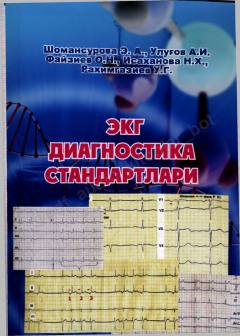

EDEKG diagnostikasi va yurak-qon tomir kasalliklarini tahlil qilish bo'yicha o'quv qo'llanma.
Ushbu o'quv qo'llanma yurak-qon tomir tizimi kasalliklarini elektrokardiografiya (EKG) yordamida tashxislash asoslarini yoritadi. Kitobda miokard shikastlanishlari mexanizmlari, EKG tahlili algoritmlari va talabalar uchun nazorat topshiriqlari keltirilgan.